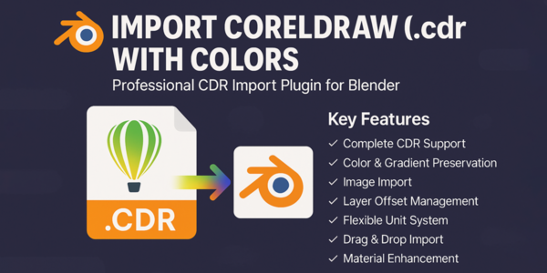
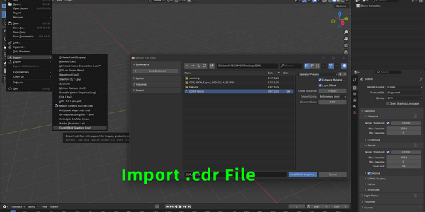
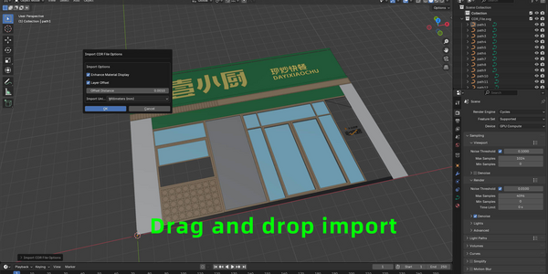
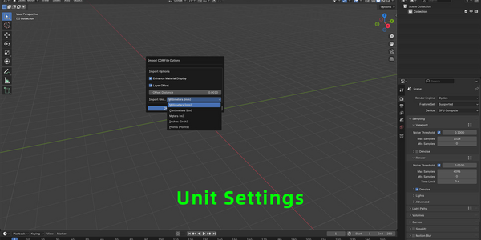
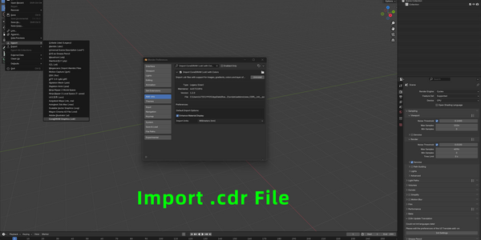
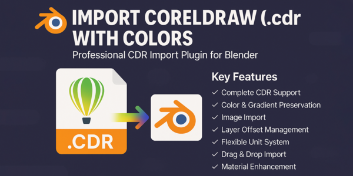
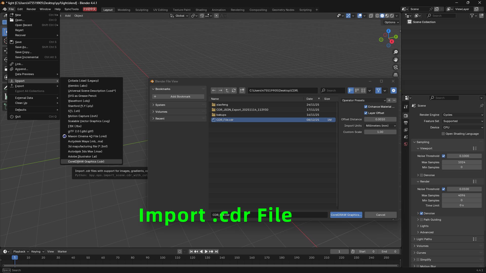
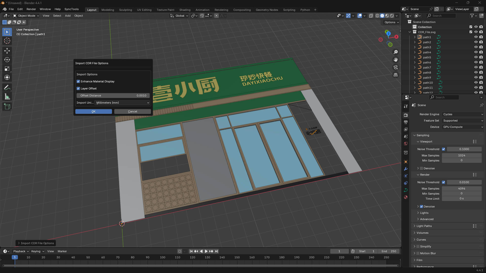

| 导入 CorelDRAW 图形 文件 (.cdr) 将 CorelDRAW 无缝集成到 Blender 中，改变您的工作流程！
这个强大的插件允许您导入 .cdr 文件到 Blender 中，同时保留颜色、渐变、图像和图层结构。 | ||||||||||||||
| 核心功能 核心功能
  | ||||||||||||||
| ||||||||||||||
| 技术细节 技术细节 该插件使用 Inkscape 强大的转换引擎（已内置）将 CDR 文件转换为 SVG 格式，然后使用内置的 SVG 导入器导入到 Blender 中。 这确保了最大的兼容性和高质量的保留。 非常适合使用 CorelDRAW 工作并需要将矢量图形导入 Blender 的设计师、艺术家和专业人士，用于：
| ||||||||||||||
| 系统要求 系统要求
|
| |
| 导入 CorelDRAW 图形(.cdr) 文档 完整的guide to importing CorelDRAW 图形 files into Blender with full color, gradient, and layer preservation. | |||||||||||||||||
| 概述 概述 此插件使 Blender 能够导入 CorelDRAW (.cdr) 文件，同时保留颜色、渐变、图像和图层结构。它使用 Inkscape（已内置）将 CDR 文件转换为 SVG 格式，然后使用内置的 SVG 导入器导入到 Blender 中。 | |||||||||||||||||
| 安装 安装
| |||||||||||||||||
| 系统要求 系统要求
| |||||||||||||||||
| 使用方法 使用方法 导入文件 方法一：文件菜单
方法二：拖放导入
导入选项
| |||||||||||||||||
| 偏好设置 偏好设置 通过以下路径访问： 编辑 > 偏好设置 > 插件 > 导入 CorelDRAW (.cdr) with 颜色 Default 导入选项:
| |||||||||||||||||
| 功能 功能 颜色保留 CDR 文件中的颜色会被保留并自动增强，以在 Blender 中获得最佳显示效果。插件会创建发光着色器以确保颜色在视口和渲染中都可见。 渐变支持 导入过程中渐变会被保留并在 Blender 中正确显示。插件会增强渐变材质以获得更好的可见性。 图像导入 CDR 文件中的嵌入图像会自动从 Base64 编码中提取并作为单独的图像资源导入。 图像在转换过程中存储在临时目录中，并在导入的 SVG 中正确引用。 图层偏移 为防止图层重叠，插件可以根据图层顺序自动应用小的 Z 轴偏移。这确保每个图层在 3D 空间中略有分离。 批量导入 一次导入多个 CDR 文件。所有文件将使用相同的导入设置，您将收到导入对象和图像的摘要。 单位转换 插件支持多种单位系统，并自动将 CDR 单位转换为 Blender 单位（米）。这确保了导入图形的精确缩放。 | |||||||||||||||||
| 故障排除 故障排除 问题: "找不到解析器" 错误 解决方案: 确保插件已正确安装。内置的 Inkscape 转换器应包含在 Inkscape 文件夹中。 问题: "请启用 SVG 导入器" 错误 解决方案: 前往 编辑 > 偏好设置 > 插件 并启用"导入-导出: 可缩放矢量图形 (SVG)"。 问题: 颜色显示不正确 解决方案: 在导入选项或偏好设置中启用"增强材质显示"。这确保颜色在视口中可见。 问题: 图层重叠 解决方案: 在导入选项中启用"图层偏移"以自动在 Z 轴上分离图层。 问题: 导入的对象太大/太小 解决方案: 调整"导入单位"设置以匹配 CDR 文件中使用的单位系统。CDR 文件通常使用毫米。 | |||||||||||||||||
| 技术细节 技术细节
| |||||||||||||||||
| 限制 限制
| |||||||||||||||||
| 支持 支持 如有问题、疑问或功能请求，请参考插件的支持渠道。 | |||||||||||||||||
| 版本历史 版本历史 v1.2.0 - 当前版本
| |||||||||||||||||
| 授权协议 授权协议 GPL-3.0-or-later |